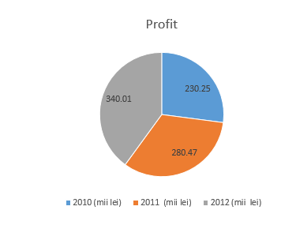
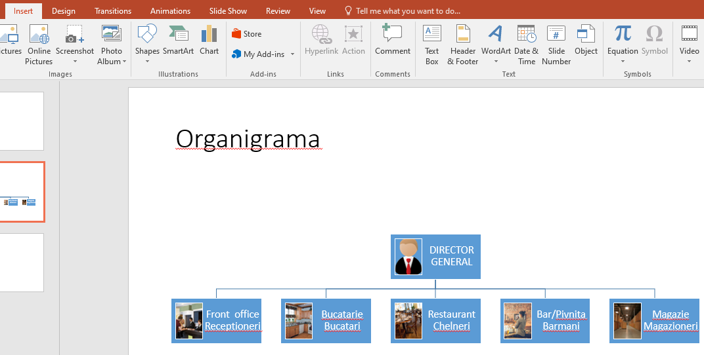
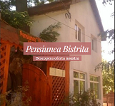

Fişa nr.7
APLICAŢIE
- Porniţi aplicaţia pentru prezentări, deschideţi o nouă prezentare.
- Primul diapozitiv va fi de tip titlu şi va conţine titlul „Pensiunea Bistriţa” şi subtitlul „Prezentarea pensiunii și a împrejurimilor”.
- Adăugaţi un al doilea diapozitiv care va fi de tip titlu şi text. Titlul – „Facilitaţi”. Textul va conţine:
General
recepţie deschisă nonstop, terasă, camere pentru nefumători, lift, check-in/check-out express, seif,
încălzire, cameră de bagaje, restaurant (à la carte)
Activităţi
saună, masaj, tenis de masă, cadă cu hidromasaj, drumeţii
Aplicaţi un efect de animaţie titlului şi marcatori, la alegere, pentru fiecare facilitate.
- Adăugaţi un nou diapozitiv ”Preţuri” în care inseraţi un tabel cu preţurile practicate:
| Condiţii | Maxim | Preţ (RON) |
| Cameră dublă | Mic dejun inclus | 2 pers. | 225 |
| Suită | Mic dejun inclus | 2 pers. | 335 |
| Suită superioară | Mic dejun inclus | 2 pers. | 405 |
- Adăugați un nou diapozitiv ”Profit” în care vor fi introduse sumele încasate în ultimii 3 ani:
| An | 2010 (mii lei) | 2011 (mii lei) | 2012 (mii lei) |
| Profit | 230.25 | 280.47 | 340.01 |
- Folosind datele din diapozitivul precedent, adăugaţi în următorul diapozitiv o diagramă radială, având afişate valorile pe grafic.
Pentru detalii:
Diagrame radiale

- În următorul diapozitiv ”Organigrama” realizaţi organigrama pensiunii.
Pentru detalii:
Organigrame

- Inseraţi un nou diapozitiv ”Cuprins” care să conţină cuprinsul prezentării. Mutaţi diapozitivul pe poziţia 2 în prezentare.
- Inseraţi o singură dată, folosind o funcţie specială, în colţul din dreapta jos imaginea următoare astfel încât aceasta să apară pe fiecare diapozitiv:

- În primul diapozitiv realizați pentru titlul prezentării ”Pensiunea Bistrița” un hyperlink către pagina de internet a acesteia: https://pensiuneabistritaeforiesud.cazare7.ro
- Adăugaţi întregii prezentări o temă aleasă de voi şi aplicaţi un efect de tranziţie
întregii prezentări. Salvaţi fişierul cu numele vostru "Nume_Prenume.pptx".